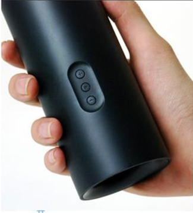
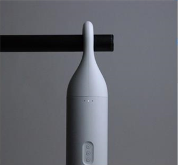

<!DOCTYPE html>
<html lang="en">
<head>
    <meta charset="UTF-8">
    <meta name="viewport" content="width=device-width, initial-scale=1.0">
    <title>Document</title>

    <link rel="stylesheet" href="../UItest.html/UIreat.css">
    <!-- 
        media-query : 반응형 화면을 만들기 위한 태그
        max-width / min-width를 사용하여 디스플레이 사이즈에 따라
        화면의 배치 (layout)을 변경하는 태그
        폰 320px / pad 768px / display 800px  1280px 일반적

        max-width : 화면의 최대 너비를 조건으로 하여 미디어 쿼리를 작성
        - 가장 큰 화면 사이즈의 레이아웃을 기본으로 하고, 점차 축소하는 형태로
        css를 작성
        min-width : 화면의 너비를 최소 너비를 조건으로 하여 미디어 쿼리를 작성
        - 작은 화면 사이즈를 기본으로 하여 점차 확장되어가는 형태로 작성
     -->
   
</head>
<body>

</body>
</html>
<!DOCTYPE html>
<html lang="en">
<head>
    <meta charset="UTF-8">
    <meta name="viewport" content="width=device-width, initial-scale=1.0">
    <title>Document</title>
   
    
</head>
<body>
    <div class="header"><h1>IN'O</h1></div>
    <div class="main-img"></div>
    <div class="subject">
        <ul id="u">
            <li id="p">Portfolio</li>
            <li id="m">Make Hardware Soft</li>
            <li id="t">IN'O is hanger-type bluetooth<br>
            speaker that does not merely focus<br>
        on its audio features. It naturally<br>
    blends into your life through lean UX<br>
and minimal design.</li>
        </ul>
    </div>
    <div class="content"></div>
    <div class="sub"></div>

    
    
</body>
</html>
